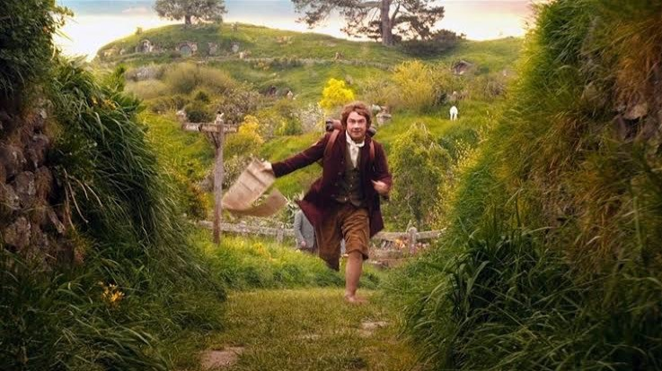

The Bilbo-Faramir Scale


The definitive, highly scientific, and completely arbitrary scale for measuring the "hobbit-ness" of a situation versus its "steward-of-gondor-ness".
Want to see where you fall on this scale?

The definitive, highly scientific, and completely arbitrary scale for measuring the "hobbit-ness" of a situation versus its "steward-of-gondor-ness".
Want to see where you fall on this scale?